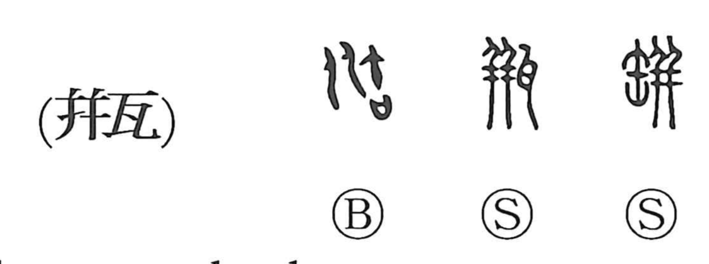

瓶

Kun: kame | On: bin, hei
bottle ・ jar ・ earthenware pot ・ well bucket ・ vase
Explanation
A phono-semantic character: the vessel element combines with the phonetic 丼, which signals the on reading hei. In early lexicography a related form is also noted, but the graph itself names a kame—an earthenware pot for water or wine—and by extension the tsurube, the bucket used to draw water from a well. The Book of Odes offers a vivid image: “When the small wine vessel is exhausted, it is the shame of the great jar,” an allegory teaching that the people’s hardship is a disgrace to those who govern. In Japanese it is read bin in everyday compounds such as binzume (bottled goods) and kabin (flower vase).